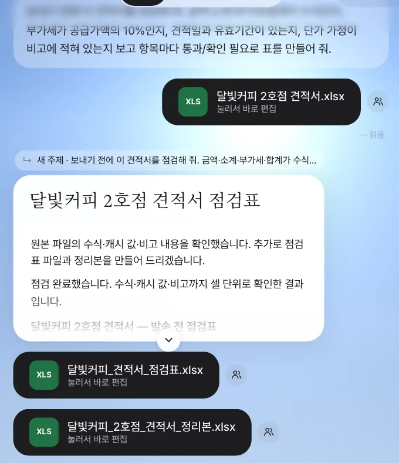
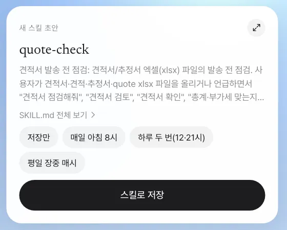
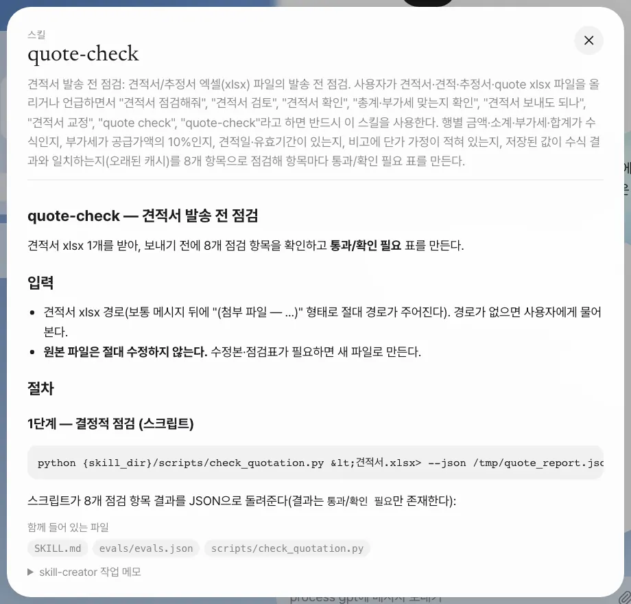
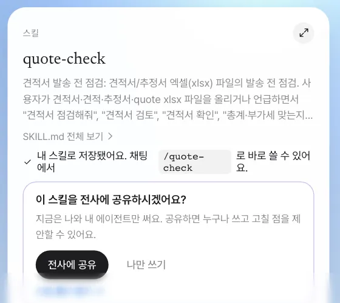
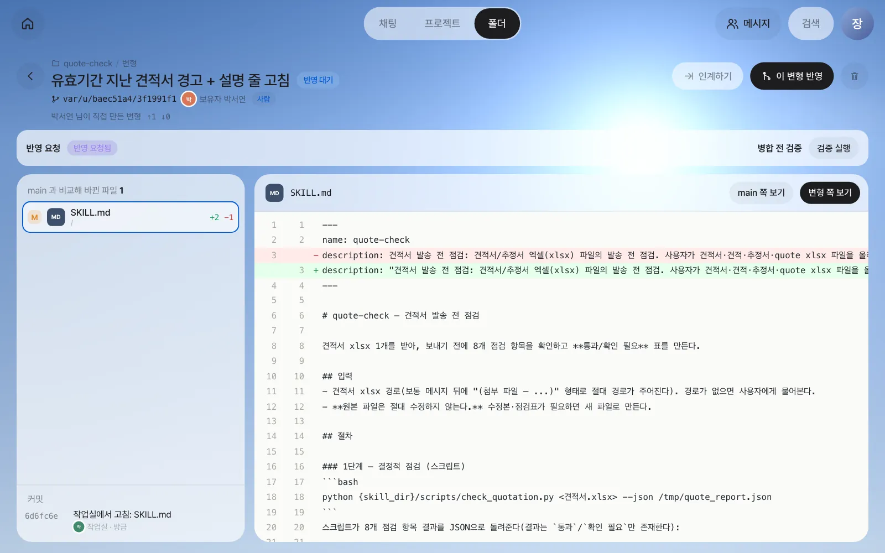
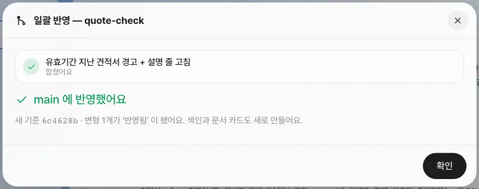
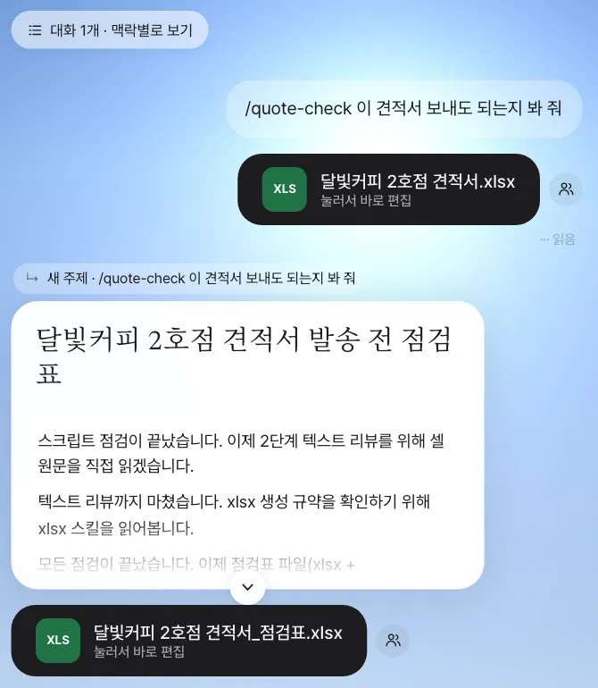

한 번 잘된 대화를 다음에도 똑같이 하게 하려면 스킬로 저장합니다. 견적서를 보내기 전 점검을 대화로 한 번 해 보고, 그 방법을
quote-check스킬로 만들어 다시 쓰고, 팀 전체에 공유한 뒤, 박서연이 낸 개선 제안을 비교·검증해 반영하기까지 따라 합니다.
스킬이란#
9장에서 회신 직전, 비서는 견적서 유효기간을 한 번 더 보라고 짚었습니다. 이런 점검은 견적서를 보낼 때마다 해야 합니다. 그런데 매번 “금액이 수식인지, 부가세가 10%인지, 유효기간이 있는지…”를 처음부터 설명하면 빠뜨리는 항목이 생기고, 사람마다 점검 기준이 달라집니다.
스킬은 일 하나를 하는 방법을 적은 문서(SKILL.md)와 그 일에 쓰는 스크립트·예시를 묶은 폴더입니다. 비서는 요청이 스킬의 설명과 맞으면 그 절차를 따릅니다. Process GPT 에이전트의 스킬을 그대로 쓰므로, Lite에서 만든 스킬은 Process GPT의 프로세스 단계에서도 쓸 수 있습니다.
| 그냥 대화 | 스킬 |
|---|---|
| 매번 설명해야 함 | /quote-check 한 줄, 또는 “견적서 점검해 줘”로 자동 선택 |
| 사람·날마다 결과가 다름 | 같은 절차·같은 점검 항목 |
| 나만 앎 | 팀에 공유, 개선 제안을 받아 함께 다듬음 |
| 정해진 시각에 못 돌림 | 예약(미션)으로 돌림(11장) |
따라 하기 1 — 먼저 대화로 한 번#
스킬은 “잘된 대화”에서 시작하는 것이 좋습니다. 9장에서 만든 달빛커피 2호점 견적서.xlsx를 입력창의 클립 버튼으로 첨부하고 적습니다.
보내기 전에 이 견적서를 점검해 줘. 금액·소계·부가세·합계가 수식인지, 부가세가 공급가액의 10%인지, 견적일과 유효기간이 있는지, 단가 가정이 비고에 적혀 있는지 보고 항목마다 통과/확인 필요로 표를 만들어 줘.
실습에서 비서는 셀 단위로 확인해 통과 7 / 확인 필요 2를 냈습니다. 사람이 놓친 것이 둘 있었습니다.
| # | 점검 항목 | 결과 | 내용(실습 원문 요약) |
|---|---|---|---|
| 1~4 | 행 금액·소계·부가세·합계가 수식인지 | 통과 | =수량×단가, =SUM(F9:F16), =F17*0.1, =F17+F18 |
| 5·6 | 견적일·유효기간 | 통과 | 2026-10-27, 2026-11-26(견적일+30일) |
| 7 | 유효기간 문구 | 확인 필요 | “(발견일로부터 30일)” — ‘견적일’의 오타 |
| 8 | 단가 가정이 비고에 | 통과 | 비고 1·2·4 |
| 9 | 저장된 값이 수식 결과와 같은지 | 확인 필요 | 홀 단가를 바꾼 뒤 저장된 합계가 옛 값(61,908,000)으로 남아 있음 |
비서는 표 말고도 점검표와 고친 정리본을 엑셀 파일로 따로 만들어 주었습니다(원본은 고치지 않음).

따라 하기 2 — 스킬로 만들기#
같은 대화에서 이어서 적습니다.
방금 한 견적서 점검 방법을 스킬로 만들어 줘. 이름은 quote-check. 견적서 엑셀 파일을 주면 금액·소계·부가세·합계 수식, 부가세 10%, 견적일·유효기간, 비고의 단가 가정, 저장된 값과 수식 결과가 맞는지를 점검해서 항목마다 통과/확인 필요 표로 알려 주는 스킬이야.
“스킬 만들어 줘”는 Process GPT의 skill-creator(스킬을 만드는 스킬)가 맡습니다. skill-creator는 SKILL.md를 쓰고, 시험용 견적서를 만들어 스킬을 실제로 돌려 보고(평가), 고쳐서 다시 돌리는 과정을 반복합니다. 그래서 오래 걸립니다. 실습에서는 1시간이 넘게 걸렸습니다. 그동안 채팅에는 긴 출력 대신 「스킬 만드는 중 · … (N단계)」 상태만 보입니다.
스킬 만들기가 중간에 끊겼을 때
현재 버전에서는 이렇게 긴 작업이 서버 오류로 중간에 끊길 수 있습니다. 만들던 SKILL.md·스크립트·평가는 작업 폴더에 남아 있으므로, 아까 만들던 quote-check 스킬을 마무리해 줘라고 다시 요청하면 남은 단계만 마치고 초안 카드를 줍니다.

카드의 확대 버튼이나 「SKILL.md 전체 보기」를 누르면 스킬 전체와 함께 들어 있는 파일이 보입니다. 실습의 quote-check는 8개 항목을 판정하는 스크립트(scripts/check_quotation.py)로 숫자를 먼저 기계적으로 확인하고, 그다음 오타·논리 불일치를 사람 눈처럼 읽어 “확인 필요”로 올리는 2단계 구조였습니다. 시험용 견적서 두 개(깨끗한 것, 저장값이 옛 값인 것)로 평가한 기록(evals/evals.json)도 들어 있습니다.

확인할 것: 카드 이름 quote-check, 함께 들어 있는 파일에 SKILL.md와 점검 스크립트·평가 기록(실습에서는 scripts/check_quotation.py·evals/evals.json).
「저장만」을 고른 채 「스킬로 저장」을 누릅니다. 카드가 바뀝니다.

새 스킬은 내 스킬로 시작합니다. 작성자 본인과 그 비서만 쓰고, 다른 사람의 목록에는 보이지 않습니다. 「설정 › 스킬」에서도 같은 스킬을 보고 예약을 걸 수 있습니다(11장).
SKILL.md 첫머리를 손으로 고칠 때
설명(description) 줄에 쌍점(:)을 넣으면 첫머리 형식이 깨져, 비서가 설명이 없는 스킬로 보고 고르지 못합니다. 쌍점을 넣을 때는 설명 전체를 큰따옴표로 감싸세요. 실습에서는 설명 앞에 견적서 발송 전 점검:을 붙였다가 이 문제가 생겼고, 따라 하기 4에서 박서연이 고칩니다.
따라 하기 3 — 스킬로 다시 쓰기#
저장한 스킬은 두 가지로 부릅니다.
| 부르는 법 | 예 | 언제 |
|---|---|---|
| 슬래시 | /quote-check 이 견적서 보내도 되는지 봐 줘 |
이 스킬을 꼭 쓰게 할 때 |
| 그냥 말하기 | 이 견적서 점검해 줘 (파일 첨부) |
설명이 요청과 맞으면 비서가 스킬을 고름 |
아직 공유하지 않은 내 스킬도 슬래시로 부르면 파일을 붙여 함께 쓸 수 있습니다. 비서가 내 스킬 폴더의 SKILL.md를 찾아 그 절차대로 첨부 파일을 점검합니다.
스킬을 잘 쓰고 나면 카드 아래에 “‘quote-check’ 을(를) 잘 썼어요. 전사에 공유하시겠어요?”가 한 번 더 뜹니다.
따라 하기 4 — 팀에 공유하고 개선 제안 받기#
공유하기#
스킬 카드의 「전사에 공유」를 누르면 “전사에 공유했어요 — 이제 누구나 ‘quote-check’ 을(를) 쓰고, 고칠 점을 변형으로 제안할 수 있어요. 반영은 작성자와 이 스킬을 쓰는 에이전트의 담당자만 해요.”로 바뀝니다. 이때 스킬이 팀 스킬로 설치되어 김민지·박서연의 비서도 쓸 수 있게 됩니다.
| 내 스킬 | 공유한 스킬 | |
|---|---|---|
| 누가 쓰나 | 나와 내 비서 | 팀 모두, 프로세스의 에이전트 단계 |
| 누가 고치나 | 나 | 누구나 변형으로 제안, 반영은 작성자·에이전트 담당자 |
| 어디 있나 | 스킬 폴더(공유 폴더의 한 종류, 13장) | 같은 폴더 + 팀 스킬로 설치 |
박서연의 개선 제안#
박서연은 견적서를 쓰다가 유효기간이 지난 견적서를 모르고 보낼 뻔했습니다. 공유된 스킬 폴더(quote-check)를 열어 변형을 하나 만들고, 작업실(23장)에서 SKILL.md를 고쳤습니다.
- 2단계 텍스트 리뷰에 “유효기간이 오늘보다 지났는지 — 지났으면 점검표 맨 위에 ‘⚠ 유효기간 지남’ 경고 줄을 먼저 쓴다”를 한 줄 더함
- 깨져 있던 설명 줄을 큰따옴표로 감쌈
그리고 「반영 요청」을 보냈습니다. 작성자인 장진영 팀장의 홈에 알림이 옵니다.
[스킬] 반영 요청 — quote-check
박서연 님이 'quote-check' 스킬에 바꾼 점을 반영해 달라고 요청했어요: 유효기간 지난 견적서 경고 + 설명 줄 고침
비교하고, 검증하고, 반영하기#
알림을 누르면 변형 화면이 열립니다. 왼쪽에 바뀐 파일(SKILL.md +2 −1), 오른쪽에 main과 나란히 비교한 줄이 보입니다.

「검증 실행」은 반영 전에 같은 시험 요청을 main의 스킬과 변형의 스킬로 각각 돌리고 빠른 AI 모델이 채점해, 두 결과를 나란히 보여 줍니다. 시험 요청은 스킬에 저장된 평가가 있으면 그것을, 없으면 SKILL.md를 읽고 두 개(기존 핵심 동작 하나, 이번 변경과 관련된 동작 하나)를 만듭니다. 실습에서는 다음 두 요청이 만들어졌습니다.
견적서 점검해줘+ 시험용 견적서견적서 점검해줘+ 저장된 값이 수식 결과와 다를 수 있는 시험용 견적서
검증은 20분까지 걸릴 수 있습니다
검증은 시험 요청을 변경 전·후 스킬로 실제로 한 번씩 돌리므로 몇 분, 길게는 20분까지 걸립니다. 도는 동안에는 “변경 전·후로 돌려 보는 중… 5분째(최대 20분)”처럼 걸린 시간이 보이고, 20분 안에 끝나지 않으면 “시간 초과”로 멈춰 다시 검증할 수 있습니다. 걸리는 시간은 쓰는 AI 모델에 따라 다릅니다. 검증은 반영의 조건이 아니라 참고 자료이므로, 기다리기 어려우면 실습에서처럼 차이를 직접 읽고 반영하세요.
「이 변형 반영」을 누르면 일괄 반영 시트가 열립니다. 충돌이 나면 어떻게 할지(멈추고 알려 줘요 · 해결 에이전트에게 맡겨요 · 파일마다 한쪽을 골라요)를 고르고 「반영 시작」을 누르면 “합쳤어요 — main 에 반영했어요 · 변형 1개가 ‘반영됨’ 이 됐어요”가 뜹니다.

확인할 것: 스킬 폴더의 「기여 기록」에 박서연의 「제안 반영」, 설치된 SKILL.md의 설명 줄이 큰따옴표로 감싸져 있음.
반영 뒤 — 김민지가 쓰기#
이제 김민지도 같은 견적서를 첨부하고 /quote-check 이 견적서 보내도 되는지 봐 줘라고 씁니다. 약 2분 뒤 점검표가 옵니다.

실습 결과는 “아직 보내면 안 됩니다 — 통과 5건 / 확인 필요 3건”이었고, 점검표 위에 “유효기간 2026-11-26까지(미만료)”라는 줄이 먼저 나왔습니다. 박서연이 더한 유효기간 확인이 모두의 스킬에 들어간 것입니다. 보내기 전 고칠 점으로는 F10의 저장값(재계산 필요)과 B6의 오타(“발견일” → “견적일”)를 짚었습니다.
반영 권한은 작성자(장진영)와, 이 스킬을 쓰는 에이전트의 담당자에게만 있습니다. 박서연의 화면에는 「이 변형 반영」 대신 「반영 요청」만 있습니다. 반영되면 팀 스킬이 새 버전으로 바뀌어 모두가 고친 스킬을 쓰고, 박서연에게는 기여 기록이 남습니다.
다음 장으로#
스킬은 부를 때만 돕니다. 다음 장에서는 비서가 쓸 외부 서비스를 연결하고, 이 quote-check처럼 저장한 방법을 “매주 월요일 9시”처럼 정해진 시각에 저절로 돌게 하는 예약 미션을 만듭니다(11장).
영상으로 보기
스킬 공유 영상에 공유 → 변형으로 개선 제안 → 반영 흐름이 있습니다. 스킬을 예약으로 돌리는 것은 연동·스킬·미션 영상에서 볼 수 있습니다.
확인 문제
- 박서연이
quote-check를 쓰다가 “유효기간이 지난 견적서는 맨 위에 경고로 보여 줬으면” 합니다. 박서연이 SKILL.md를 바로 고칠 수 있을까요? - 새로 만든 스킬을 저장한 직후, 김민지가 채팅에
/quote-check라고 쓰면 어떻게 될까요? - 반영하기 전에 「검증 실행」을 하는 이유는?
답
- 바로 고칠 수는 없습니다. 공유된 스킬은 누구나 쓰고 변형을 만들어 고칠 수 있지만, main(모두가 쓰는 버전)에 반영하는 것은 작성자와 그 스킬을 쓰는 에이전트의 담당자만 할 수 있습니다. 박서연은 변형에서 고치고 「반영 요청」을 보냅니다.
- 쓸 수 없습니다. 새 스킬은 내 스킬로 시작해, 작성자 본인과 그 비서만 씁니다. 「전사에 공유」를 눌러야 팀이 씁니다.
- 바꾼 스킬이 예전에 잘하던 일까지 망가뜨리지 않았는지 보기 위해서입니다. 같은 시험 요청을 main과 변형으로 각각 돌려 채점하고, 둘을 나란히 비교한 뒤 반영을 결정합니다.